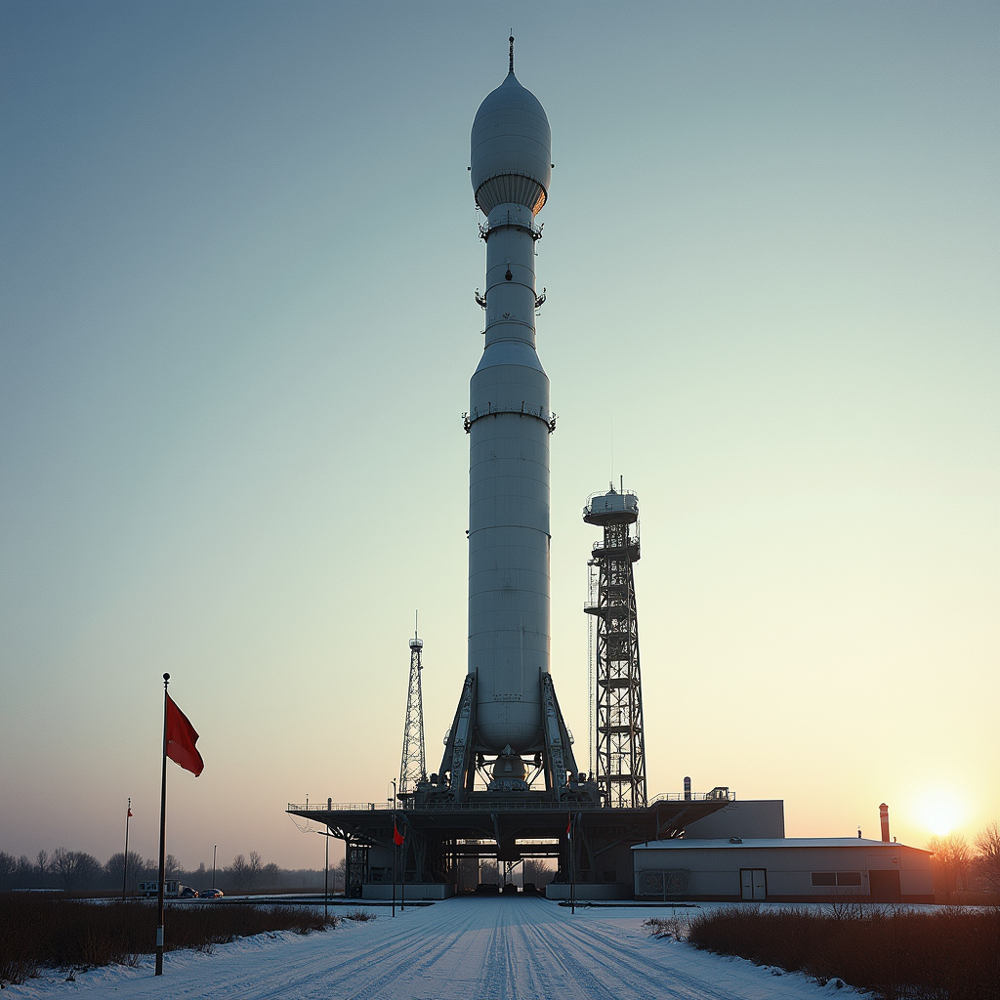
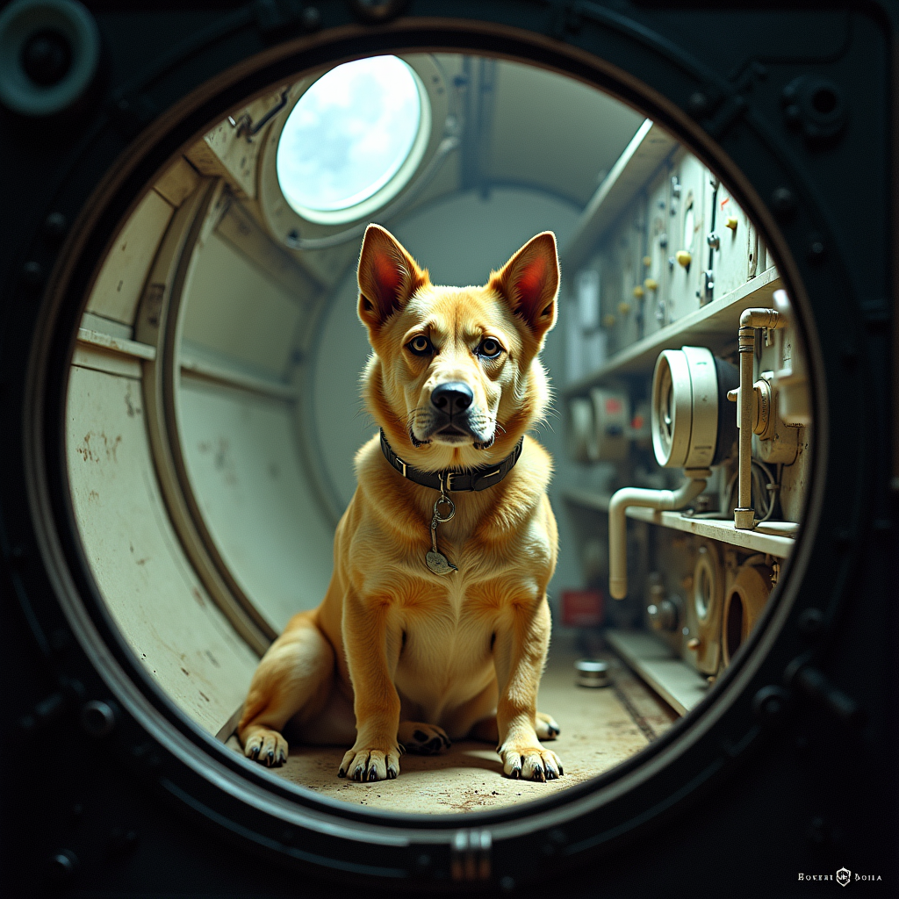
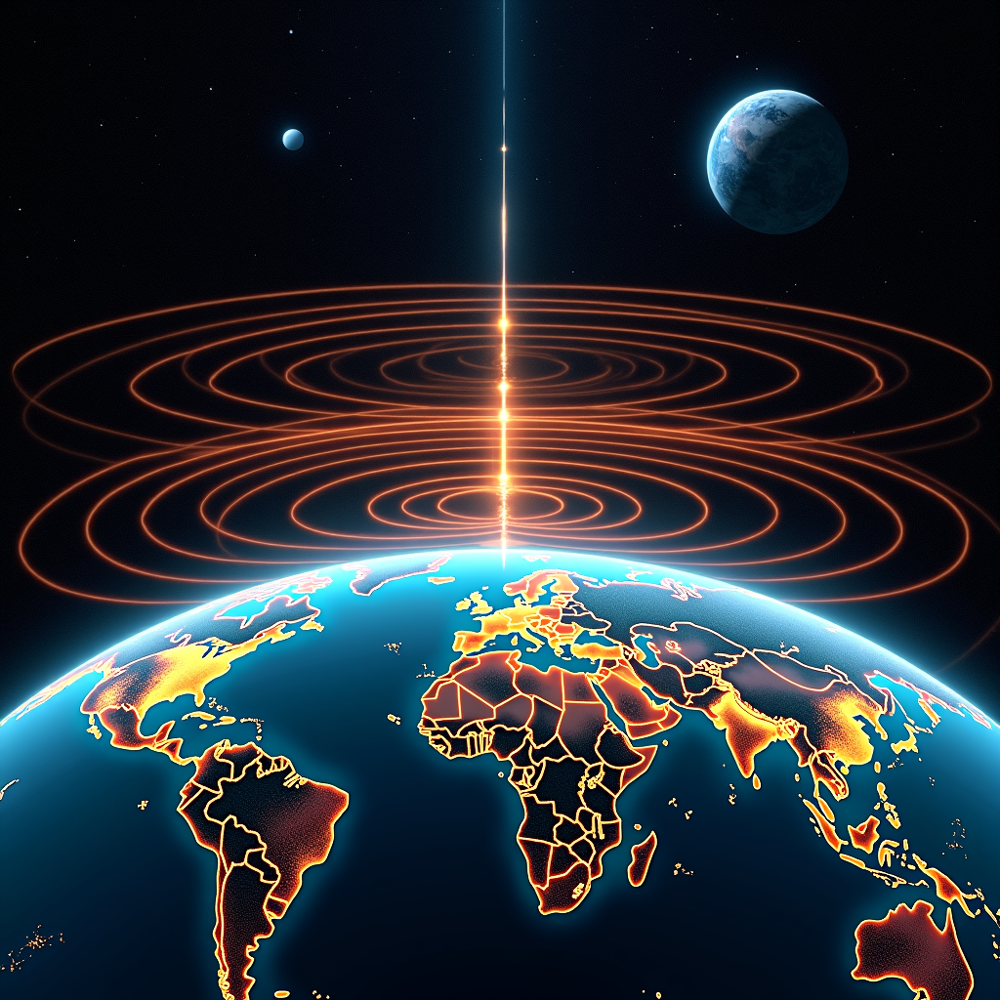
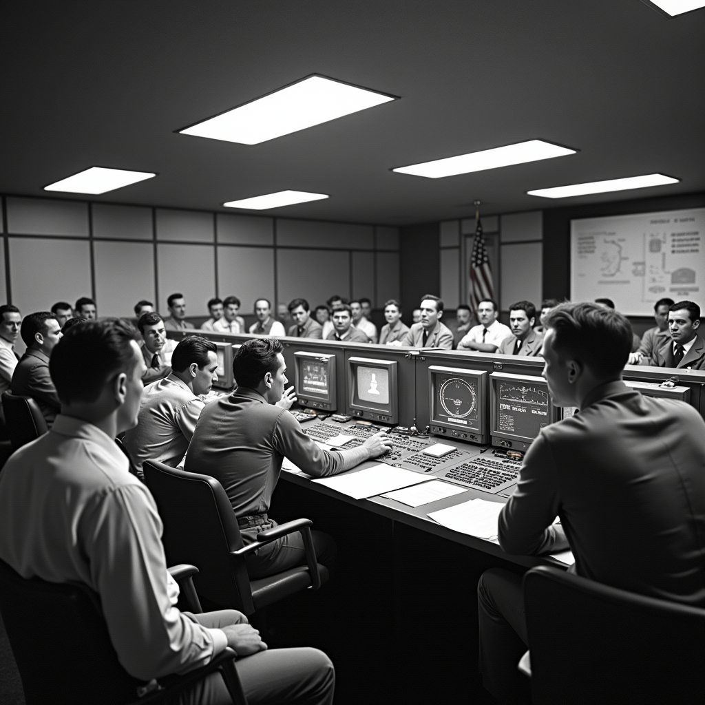

The Beginnings of Space Exploration: The Era of Sputnik and Gagarin
Modern space exploration truly begins on October 4, 1957, when the Soviet Union launches Sputnik 1, the first artificial satellite to orbit the Earth. This satellite, weighing 83.6 kilograms, completes an orbit in approximately 96 minutes and emits a distinctive radio signal that will be captured by radio amateurs around the world. The success of Sputnik 1 marks a decisive turning point in the space race, creating a genuine technological shock in the West and accelerating American space programs.
On November 3, 1957, less than a month after the first satellite, the USSR launches Sputnik 2, a far more ambitious craft weighing 1,086 kilograms, carrying the female dog Laika on board. This major event demonstrates that the Soviet Union masters technology powerful enough to send living creatures into space, paving the way for human spaceflight.
April 12, 1961 remains forever etched in human history: Yuri Gagarin, a 27-year-old Soviet cosmonaut, becomes the first human to travel in space aboard Vostok 1. His flight, lasting 108 minutes, orbits the Earth at an average altitude of 327 kilometers. This Soviet achievement galvanizes the United States and President John F. Kennedy who, on May 25, 1961, announces the ambitious objective of sending a man to the Moon before the end of the decade.
- October 4, 1957: Launch of Sputnik 1 (83.6 kg)
- November 3, 1957: Sputnik 2 with female dog Laika (1,086 kg)
- January 31, 1958: Explorer 1, first American satellite
- April 12, 1961: Yuri Gagarin, first human in space (Vostok 1)
- May 5, 1961: Alan Shepard, first American in space (Mercury-Redstone 3)
- February 20, 1962: John Glenn, first American orbit around Earth (Mercury-Atlas 6)
The Race to the Moon and Apollo Missions
The 1960s decade is dominated by the race to the Moon between the United States and the Soviet Union. The American Apollo program, directed by NASA with the support of 400,000 people and a budget of 25.4 billion dollars (equivalent to approximately 280 billion dollars today), represents one of the greatest scientific and technical efforts ever undertaken.
On July 21, 1969, Neil Armstrong becomes the first human to walk on the Moon, followed 20 minutes later by Buzz Aldrin. This historic mission, Apollo 11, lasts 8 days and 3 hours. Armstrong utters the famous phrase "That's one small step for a man, one giant leap for mankind" as he descends the lunar module ladder. The live transmission from the Moon is watched by approximately 600 million people around the world.
Between 1969 and 1972, six Apollo missions successfully land astronauts on the Moon. In total, 12 men walk on the lunar surface, collecting 381.7 kilograms of lunar rock samples. The last crewed lunar landing takes place on December 7, 1972 with Apollo 17, where astronauts Eugene Cernan and Harrison Schmitt explore the Taurus Littrow valley for three days.
- July 20-21, 1969: Apollo 11 – First human lunar landing (Neil Armstrong and Buzz Aldrin)
- November 19-20, 1969: Apollo 12 – Second lunar landing (Pete Conrad and Alan Bean)
- February 11-17, 1971: Apollo 14 – Third lunar landing (Alan Shepard and Edgar Mitchell)
- July 30 - August 2, 1971: Apollo 15 – First lunar rover used
- July 16-27, 1972: Apollo 17 – Last lunar landing with astronauts
- December 7, 1972: End of crewed Apollo missions to the Moon
Space Stations and Robotic Exploration
After the peak of lunar missions, space exploration turns toward placing permanent space stations in orbit and developing robotic probes to explore the solar system.
The Soviet Union inaugurates this new era by launching Salyut 1 on April 19, 1971, the first operational space station. This station, occupied for 23 days by the Soyuz 11 crew, sets the precedent for prolonged human presence in orbit. The United States responds in 1973 with Skylab, a space station three times larger than Salyut 1, hosting three successive crews for a total of 171 days of occupation.
The field of robotic exploration also makes spectacular progress. On July 20, 1976, the Viking 1 probe lands on Mars and transmits the first color photographs of the Martian surface. Between 1977 and 1989, the Voyager 1 and Voyager 2 probes travel more than 14 billion kilometers, conducting detailed flybys of Jupiter, Saturn, Uranus and Neptune, revolutionizing our understanding of the outer solar system.
The International Space Station and Permanent Human Presence
On November 20, 1998, the Soviet Zarya module is launched, marking the beginning of the construction of the International Space Station (ISS). On December 2, 1998, the American Unity module docks with it, completing the initial core. The station receives its first permanent crew on November 2, 2000, with the arrival of Yuri Gidzenko, Sergei Krikalev and William Shepherd.
For 23 years, the International Space Station continuously hosts crews of three to six astronauts who rotate every six months. This orbital installation, the result of collaboration between more than 15 nations, extends 109 meters in length and weighs 420 tons. It orbits at an average altitude of 408 kilometers, completing one revolution around the Earth every 90 minutes. More than 280 men and women from 20 different countries have visited the station since 2000.
- November 20, 1998: Launch of Zarya module (ISS)
- December 2, 1998: Docking of Unity module
- November 2, 2000: Arrival of first permanent crew of three astronauts
- 2011: End of American space shuttle program after 30 years
- 408 kilometers: Average altitude of the ISS
- 16 residential and scientific modules make up the station in 2024
Mars Missions and Solar System Exploration in the 21st Century
In the 21st century, space exploration becomes considerably more diverse. Mars becomes the priority target of several space agencies. On January 4, 2004, the Spirit rover lands on Mars, followed three weeks later by Opportunity. These two rovers, initially designed to operate for 90 days, continue to explore the red planet for several years. Opportunity operates for 15 years until June 2018, setting the record for distance traveled by a rover: 45 kilometers.
On August 6, 2012, NASA's Curiosity rover, five times more massive than Opportunity with a mass of 899 kilograms, lands in Gale crater. Equipped with a mass spectrometer, high-resolution camera and other sophisticated instruments, Curiosity discovers convincing evidence of the presence of liquid water on Mars in ancient times. The rover also confirms the presence of methane in the Martian atmosphere, a gas potentially produced by biological processes.
In February 2021, the Perseverance rover arrives on Mars with an ambitious mission: to collect samples that will be returned to Earth during a future mission. Accompanied by the small helicop
"I see the Earth. It is so beautiful. Can you imagine how beautiful it is?" – Yuri Gagarin, during his historic 1961 flight



